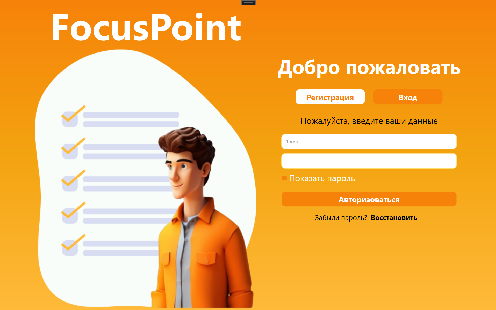
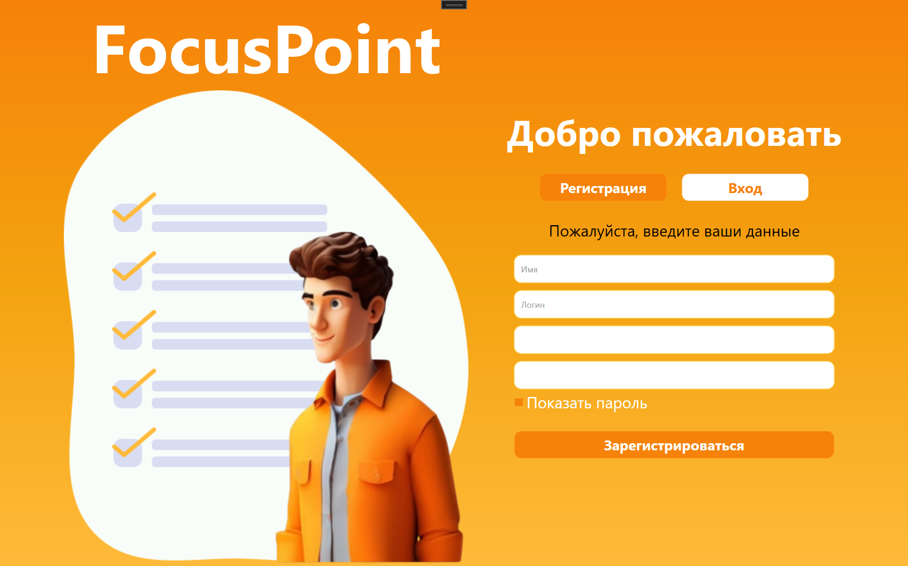
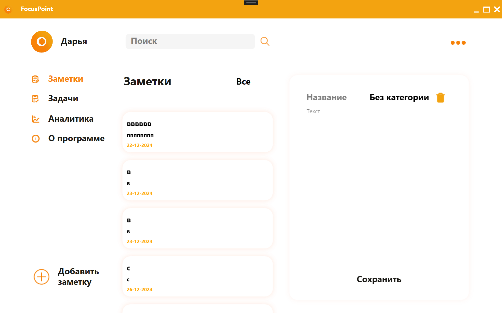
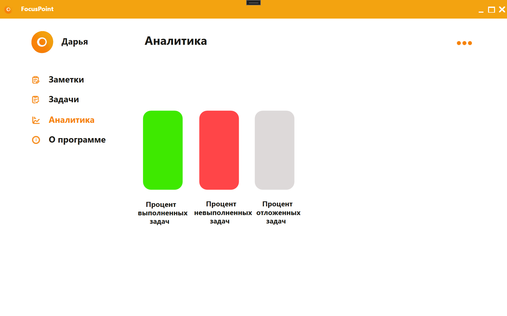
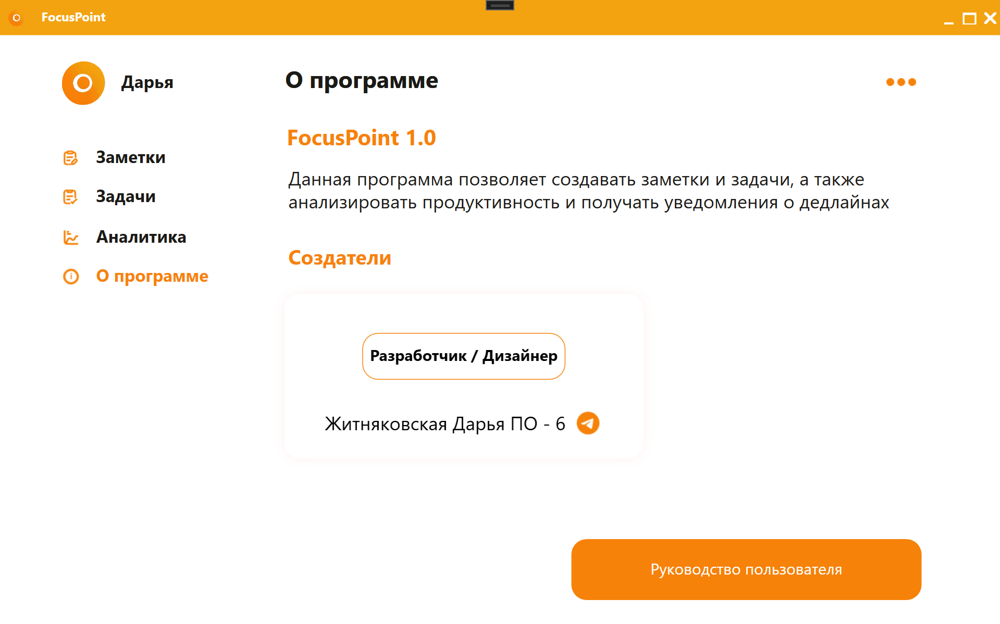

Авторизация
Эта форма позволяет пользователям войти в приложение, указав имя пользователя и пароль.
 ПодробнееРегистрация
Новые пользователи могут создать аккаунт, заполнив поля имени пользователя, логина и пароля.
 ПодробнееЗаметки
Управляйте своими заметками: добавляйте, редактируйте, удаляйте и фильтруйте их по категориям.
 ПодробнееЗадачи
Следите за своими задачами, устанавливайте дедлайны и обновляйте их статус.
 Подробнее
Подробнее
Аналитика
Анализируйте свои задачи и заметки с помощью визуальных диаграмм и фильтров.
 ПодробнееО программе
Узнайте больше о приложении FocusPoint, его создателях и назначении.
 ПодробнееНастройки
Настройте тему приложения и другие предпочтения.
 Подробнее
Подробнее